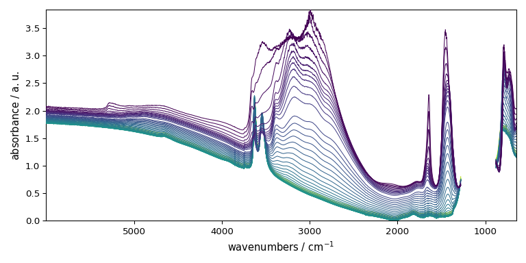
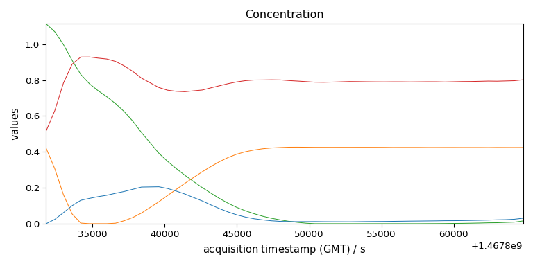
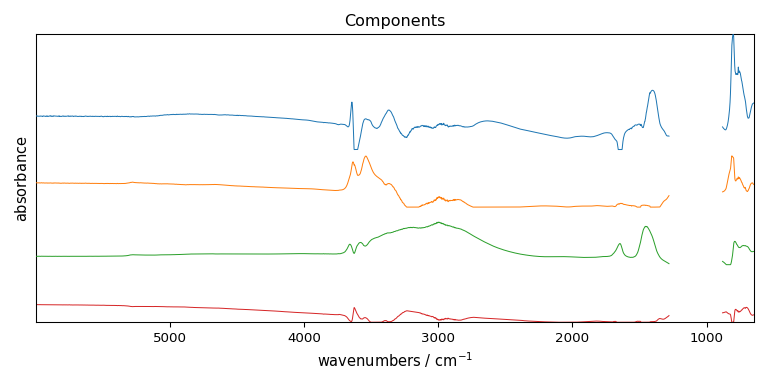

Note
Go to the end to download the full example code.
NMF analysis example
Import the spectrochempy API package
import spectrochempy as scp
Prepare the dataset to NMF factorize
Here we use a FTIR dataset corresponding the dehydration of a NH4Y zeolite and recorded in the OMNIC format.
dataset = scp.read_omnic("irdata/nh4y-activation.spg")
Mask some columns (features) wich correspond to saturated part of the spectra. Note taht we use float number for defining the limits for masking as coordinates (integer numbers would mean point index and s would lead t incorrect results)
dataset[:, 882.0:1280.0] = scp.MASKED
Make sure all data are positive. For this we use the math fonctionalities of NDDataset
objects (min function to find the minimum value of the dataset
and the - operator for subtrating this value to all spectra of the dataset.
Plot it for a visual check
_ = dataset.plot()

Create a NMF object
As argument of the object constructor we define log_level to "INFO" to
obtain verbose output during fit, and we set the number of component to use at 4.
Fit the model
model.fit(dataset)
# Get the results
# ---------------
#
# The concentration :math:`C` and the transposed matrix of spectra :math:`S^T` can
# be obtained as follow
C = model.transform()
St = model.components
violation: 1.0
violation: 0.14017421024501994
violation: 0.06158195065493233
violation: 0.03477774452872498
violation: 0.0231559126897768
violation: 0.016289564836607203
violation: 0.011732197722809666
violation: 0.009261179153190122
violation: 0.007770502529914287
violation: 0.006957471610158924
violation: 0.0064574143703549775
violation: 0.006191115125282053
violation: 0.006057238974457813
violation: 0.006000777806339427
violation: 0.005868357891308753
violation: 0.0058029180285341445
violation: 0.005772367658829993
violation: 0.005756947971777963
violation: 0.005733332889918865
violation: 0.0057006066246450444
violation: 0.005667827078790949
violation: 0.0055877366300484425
violation: 0.0055291351831671404
violation: 0.005460760674076067
violation: 0.005375194673451841
violation: 0.00528805444207507
violation: 0.005203284939611468
violation: 0.005110269931845476
violation: 0.005004969613317471
violation: 0.004889401944567265
violation: 0.0047786109167945925
violation: 0.004657040705272622
violation: 0.004527642308383149
violation: 0.004393717477174977
violation: 0.004267124138925915
violation: 0.004133928133016046
violation: 0.0040127559281388754
violation: 0.003891465351926868
violation: 0.0037652602700428243
violation: 0.0036375148218627156
violation: 0.003514710166154454
violation: 0.0033965138303581905
violation: 0.0032925205579805894
violation: 0.0031941648132721334
violation: 0.003104947029333508
violation: 0.0030221674035499644
violation: 0.002938964639033991
violation: 0.0028561158500457267
violation: 0.0027738912186803097
violation: 0.002692711668736722
violation: 0.0026129548289078436
violation: 0.0025351644702119145
violation: 0.002458740363438078
violation: 0.002384202690790973
violation: 0.0023133039094785073
violation: 0.002243736743481103
violation: 0.00217511699257861
violation: 0.002108409449092611
violation: 0.0020436678052480786
violation: 0.0019806643593507974
violation: 0.0019243270194359285
violation: 0.0018713261632057943
violation: 0.0018195678200699154
violation: 0.0017692749012863881
violation: 0.001720465749119318
violation: 0.0016731692686996421
violation: 0.001627495035147011
violation: 0.0015839173329698754
violation: 0.0015418960309274692
violation: 0.0015014385431313029
violation: 0.0014629272012160492
violation: 0.0014262081321621237
violation: 0.0013907597658088155
violation: 0.0013601582805156927
violation: 0.0013328464824004726
violation: 0.0013065923988233711
violation: 0.0012813357494810959
violation: 0.0012569657401119427
violation: 0.0012363658727399544
violation: 0.0012190114699551194
violation: 0.0011992116544501615
violation: 0.0011775622624515163
violation: 0.0011582609085414872
violation: 0.0011389415923632052
violation: 0.001119912492936163
violation: 0.0011006754884538884
violation: 0.0010832777040279008
violation: 0.001066136369230411
violation: 0.0010491933694703076
violation: 0.001031824410261181
violation: 0.0010150792321234265
violation: 0.0009988201809299293
violation: 0.000984131852881588
violation: 0.0009699922960876144
violation: 0.0009545966012007854
violation: 0.0009396363331386283
violation: 0.000926659916814176
violation: 0.0009140262172597374
violation: 0.0009015875006377203
violation: 0.0008902182357107911
violation: 0.0008780499311869063
violation: 0.0008660457470921108
violation: 0.0008543517499936885
violation: 0.0008428706003288641
violation: 0.0008315536804370358
violation: 0.0008208847158800417
violation: 0.0008104269807767491
violation: 0.0007997522484734989
violation: 0.0007893350738952827
violation: 0.0007791326607911164
violation: 0.0007691414390016601
violation: 0.0007597179067853563
violation: 0.0007504652538891512
violation: 0.0007412456856972046
violation: 0.0007322966170539858
violation: 0.0007235915691685302
violation: 0.0007151920055395514
violation: 0.0007069372346704845
violation: 0.0006987637535246689
violation: 0.0006907733550824351
violation: 0.0006830298779795241
violation: 0.0006754181243923625
violation: 0.0006679795936492631
violation: 0.0006606893398232716
violation: 0.0006536091296354075
violation: 0.0006466641120993594
violation: 0.0006399762615475305
violation: 0.000633548865077179
violation: 0.000627395742069157
violation: 0.0006215236000708902
violation: 0.0006161518203755876
violation: 0.0006113918151774635
violation: 0.0006071251736133791
violation: 0.0006030938520873861
violation: 0.0005992255771891125
violation: 0.0005955122189367265
violation: 0.0005919356405963294
violation: 0.000588473510528478
violation: 0.0005851626197891096
violation: 0.0005819472966803835
violation: 0.0005788624242482251
violation: 0.0005759087479599545
violation: 0.0005730546137310445
violation: 0.0005702968600986202
violation: 0.0005676053787183181
violation: 0.000565017678517037
violation: 0.0005624480584369117
violation: 0.0005599281471049503
violation: 0.0005574208102720207
violation: 0.0005549930907511555
violation: 0.0005526263090686077
violation: 0.0005503237863509223
violation: 0.000548087574800603
violation: 0.0005458976082894691
violation: 0.0005437570853966387
violation: 0.0005416726314725944
violation: 0.0005396329582222297
violation: 0.0005376381718606092
violation: 0.0005358628850805977
violation: 0.0005342566446343723
violation: 0.0005327134944356777
violation: 0.0005311700256180811
violation: 0.0005296374901745291
violation: 0.0005281469649345735
violation: 0.0005266549474162151
violation: 0.000525186071889303
violation: 0.0005237318107591978
violation: 0.0005222955570666933
violation: 0.0005208942964238425
violation: 0.0005195265168843979
violation: 0.000518181342811166
violation: 0.0005168846752736645
violation: 0.0005156608680271679
violation: 0.0005144616554311608
violation: 0.000513289168818774
violation: 0.0005121515266402819
violation: 0.0005110364330893784
violation: 0.0005099447315065714
violation: 0.000508875361379508
violation: 0.0005078236610582187
violation: 0.0005067909112027525
violation: 0.0005057740763562983
violation: 0.000504776717561465
violation: 0.0005037958933649138
violation: 0.0005028222129277102
violation: 0.0005018650428478657
violation: 0.0005009224423797089
violation: 0.0004999974962489266
violation: 0.0004990872395196232
violation: 0.0004981962000747478
violation: 0.000497314731819014
violation: 0.0004964417296737831
violation: 0.0004955753197878958
violation: 0.0004946901218458308
violation: 0.0004938210437306871
violation: 0.0004929673596845644
violation: 0.0004921226355843097
violation: 0.0004912871202793342
violation: 0.0004904596528539359
violation: 0.0004896376456531564
/home/runner/work/spectrochempy/spectrochempy/.venv/lib/python3.13/site-packages/sklearn/decomposition/_nmf.py:1720: ConvergenceWarning: Maximum number of iterations 200 reached. Increase it to improve convergence.
warnings.warn(
violation: 1.0
violation: 0.2781188101128589
violation: 0.21103839273442448
violation: 0.16365897573755211
violation: 0.1263812450285738
violation: 0.09689398092857995
violation: 0.07386553913526407
violation: 0.057263048836390947
violation: 0.046397106968950524
violation: 0.03776270101072369
violation: 0.030324671559647694
violation: 0.02400007799856895
violation: 0.018705054318854688
violation: 0.014282427091627284
violation: 0.010676123451468011
violation: 0.008016534827385392
violation: 0.006238616114827981
violation: 0.00512439463303003
violation: 0.00449075747965654
violation: 0.004053115751123468
violation: 0.0037443026036689266
violation: 0.0034289628116609423
violation: 0.003032319034755997
violation: 0.0027272537391467857
violation: 0.0023865056940470136
violation: 0.002085162862784004
violation: 0.0017697484695161257
violation: 0.001492571627285641
violation: 0.0012488601974044
violation: 0.0010438675111376786
violation: 0.0008573236692761475
violation: 0.0006991377766199823
violation: 0.0005706218431926724
violation: 0.0004636286240954959
violation: 0.00037487235479892743
violation: 0.00030325790844270173
violation: 0.0002463663859383625
violation: 0.00019825804790403695
violation: 0.0001582773351929557
violation: 0.00012439075792814027
violation: 9.611089606614064e-05
Converged at iteration 42
Plot results
_ = C.T.plot(title="Concentration", colormap=None, legend=C.k.labels)


[]
This ends the example ! The following line can be uncommented if no plot shows when running the .py script with python
# scp.show()
Total running time of the script: (0 minutes 0.910 seconds)